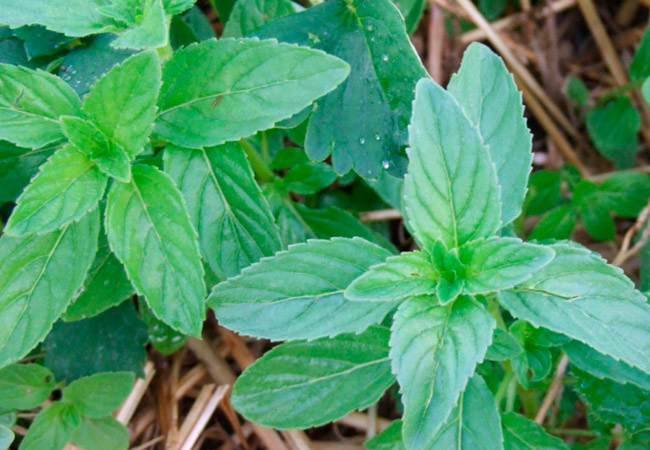
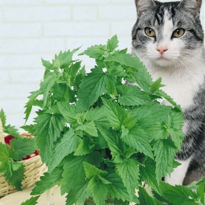
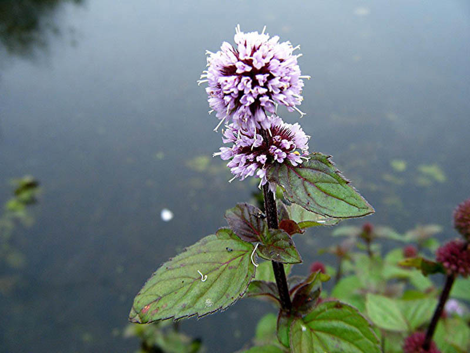
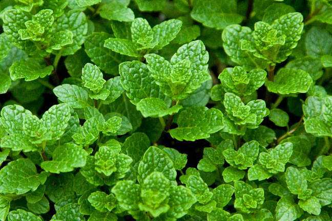

Виды мяты
Рассмотрим только самые популярные виды мяты.
Дикие виды:
- Полевая/луговая - дикое растение, произрастает практически по всей территории России

- Полевая блошиная - часто используется в грузинской кухне. Называют специей "омбало". Название свое имеет, т.к. покрывается налетом
- Кошачья - по сути, является лишь близким родственником мяты. Кошки реагируют на непеталакон, при испарении он издает сильный запах, возбуждая нервную систему кошек, это для них не опасно и не вредно.

- Водная - любит влажные места, растет по берегам водоемов. Цветет все лето.

- Душистая - нередко используется как декоративное растение для газонов.
- Лесная - обычно называют душицей, либо орегано.Часто используется как приправа для мясных и рыбных блюд
Домашние виды:
- Курчавая - имеет свое название благодаря форме листиков, кудрявой формы. Имеет в составе много карвона.

- Мексиканская - имеет резкий пряный аромат, часто выращивают для пчёл
- Мята шоколадная - в запахе присутствуют нотки шоколада
- Гвоздичная - интересна тем, что имеет гвоздичный вкус
- Мята перечная - делится на белую и черную. Вторая имеет более насыщенный, красноватый цвет стеблей и листьев и более резкие вкусовые и ароматические характеристики. Перечная - самый популярный в домашнем выращивании вид